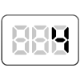

【004】変数を使った四則演算結果をコンソールに表示

- プロンプト例
JavaScriptで変数を使った四則演算結果をコンソールに表示する問題を５問作成して
四則演算 練習問題
問題①（足し算）
変数 a に 12、変数 b に 8 を代入し、
足し算の結果を console.log で表示してください。
// ここにコードを書く
問題②（引き算）
変数 x に 25、変数 y に 9 を代入し、
引き算の結果を表示してください。
// ここにコードを書く
問題③（掛け算）
変数 m に 7、変数 n に 6 を代入し、
掛け算の結果を表示してください。
// ここにコードを書く
問題④（割り算）
変数 p に 36、変数 q に 4 を代入し、
割り算の結果を表示してください。
// ここにコードを書く
問題⑤（四則演算の組み合わせ）
変数 a に 10、b に 5、c に 2 を代入し、
次の計算結果を表示してください。
// ここにコードを書く
解答例
問題①（足し算）
let a = 12; let b = 8; console.log(a + b);
解説
- + は加算演算子。
- a + b により 12 + 8 = 20 が表示されます。
問題②（引き算）
let x = 25; let y = 9; console.log(x - y);
解説
- - は減算演算子。
- 25 - 9 = 16
問題③（掛け算）
let m = 7; let n = 6; console.log(m * n);
解説
- * は乗算演算子。
- 7 × 6 = 42
問題④（割り算）
let p = 36; let q = 4; console.log(p / q);
解説
- / は除算演算子。
- 36 ÷ 4 = 9
問題⑤（四則演算の組み合わせ）
let a = 10; let b = 5; let c = 2; console.log((a + b) * c);
解説
- 計算の優先順位を変えるため ( ) を使用します。
(10 + 5) × 2 = 15 × 2 = 30
覚えるべき四則演算記号まとめ
| 演算 | 記号 |
|---|---|
| 足し算 | + |
| 引き算 | - |
| 掛け算 | * |
| 割り算 | / |
剰余 演習問題（理解チェック）
問題①
変数 a に 14、変数 b に 5 を代入し、
a を b で割った余りの結果を表示してください。
let a = 10; let b = 5; console.log(14 % 5);
【結果】
👉 答え：4
問題①
変数 c に 30、変数 d に 6 を代入し、
a を b で割った余りの結果を表示してください。
let c = 30; let d = 6; console.log(30 % 6);
【結果】
👉 答え：0